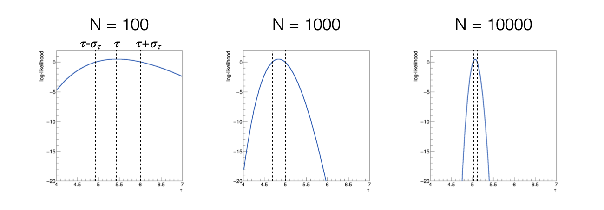

Lezione 10: stima di parametri con il metodo della massima verosimiglianza
Contents
Lezione 10: stima di parametri con il metodo della massima verosimiglianza¶
Indice¶
10.3 Le proprietà degli stimatori di massima verosimiglianza
10.4 La costruzione di una likelihood e la determinazione di un parametro

10.1 La determinazione dei parametri¶
Spesso l’obiettivo di un esperimento è la stima dei parametri di un modello
Per ottenere questo risultato, si raccolgono molti dati \(x_i\) e si utilizzano come input ad algoritmi, detti stimatori, che stimino i parametri di interesse
Le stime prodotte da uno stimatore sono variabili casuali, perché tramite gli stimatori sono funzioni di numeri casuali (i dati)
Hanno una propria distribuzione di probabilità
Esistono programmi che svolgono il compito per noi. Fra questi,
ROOTcontiene diversi algoritmi per farlo. In gergo, l’operazione di determinazione dei parametri è chiamata fit, cioè adatattamento.
10.1.1 La massima verosimiglianza¶
La tecnica della massima verosimiglianza si basa sull’assunto che la stima dei parametri ricercati corrisponda al valore che massimizza la likelihood, definita come il prodotto del valore della distribuzione di densità di probabilità calcolata per ogni misura effettuata:

La likelihood è funzione sia delle misure che dei parametri, tuttavia si evidenzia la dipendenza dai parametri perché a misure finite i dati sono immutabili.
La funzione che stima i parametri dunque si ricava dall’equazione:
10.1.2 Il massimo del logaritmo della verosimiglianza¶
Solitamente si utilizza il logaritmo della funzione di likelihood, indicato con in lettera corsiva minuscola:.
Infatti, siccome il logaritmo è una funzione monotona crescente, gli estremanti di una funzione e del suo logaritmo si trovano al medesimo posto
Il logaritmo di un prodotto di termini è uguale alla somma dei logaritmi dei singoli termini, quindi l’operazione di derivata del logaritmo della funzione di likelihood è più semplice rispetto alla derivata della funzione di likelihood:
\[\frac{\partial l(\theta)}{\partial\theta} = \frac{\partial\log(\mathcal{L}(\theta))}{\partial\theta} = \frac{\partial\log\left(\prod_{i=1}^N f(x_i,\theta)\right)}{\partial\theta} = \sum_{i=1}^N \frac{\partial\log\left(f(x_i,\theta)\right)}{\partial\theta}\]
Il logaritmo di un numero è più piccolo del numero stesso e varia su un intervallo minore rispetto alla variabilità del numero stesso, quindi operazioni con i logaritmi sono più stabili numericamente
10.2 La sigma della distribuzione dei parametri stimati¶
Sappiamo che esiste un metodo grafico per la determinazione della sigma associata ai parametri stimati con il metodo della massima verosimiglianza
consiste nel determinare i punti di intersezione fra la funzione di log-likelihood e la retta orizzontale con coordinata pari al massimo di log-likelihood - 0.5 e calcolarne la mezza distanza
Perché \(-1/2\)?
Per dimostrare che i punti corrispondenti a \(x\pm\sigma\) si possano ottenere alla condizione \(l(\theta) = l(\theta)^{\text{max}} - 0.5\) si sviluppa in serie di Taylor \(l(\theta)\) intorno allo stimatore del valore atteso \(\hat{\theta}\) e si approssima il valore di aspettazione della derivata seconda di \(l(\theta)\) con il suo valore al massimo e lo si sostituisce con la varianza dello stimatore, applicando il teorema di Rao-Cramér (dimostrazione nel modulo di Statistica).
10.3 Le proprietà degli stimatori di massima verosimiglianza¶
Sono consistenti
Sono asintoticamente non distorti, cioè hanno bias nullo per il numero di misure N che tende all’infinito
Sono asintoticamente efficienti, cioè hanno la varianza minima possibile per il numero di misure N che tende all’infinito
10.4 La costruzione di una likelihood e la determinazione di un parametro¶
Si utilizzerà l’esempio della distribuzione esponenziale per determinarne l’unico parametro τ tramite il metodo della massima verosimiglianza:

Si dimostra analiticamente che la media artimetica dei dati è uno stimatore del parametro τ,
si vuole in questo caso costruire lo stimatore numerico del parametro, come esempio di un caso generale in cui il calcolo analitico non sia possibile.
10.4.1 La determinazione del massimo del logaritmo della likelihood¶
Si può utilizzare l’algoritmo della sezione aurea sviluppato durante la Lezione 6 per trovare il massimo della log-likelihood:
double sezione_aurea_max ( double logl (const vector<double> & , double), double xMin, double xMax, const vector<double> & data, double precision = 0.0001 )
Il programma va scritto in modo che si cerchi il massimo di una funzione
I parametri in ingresso sono la funzione di cui trovare l’estremante (
logl), l’intervallo sul quale cercare il valore massimo per il parametro τ, ilvectorcontenente i dati e la precisione alla quale arrestare il calcolo, per la quale c’è un valore di default.
10.4.2 Un esempio di applicazione¶
Dopo aver generato numeri pseudo-casuali distribuiti secondo una densità di probabilità esponenziale, che si può visualizzare con un
TH1FdiROOT:Le funzioni sviluppate possono essere utilizzate con i numeri salvati in un
vector, a partire da un intervallo di ricerca del massimo scelto ragionevolmente:double massimo = sezione_aurea_max (loglikelihood, 0.5 * media_v, 1.5 * media_v, data) ;
Il risultato di questo algoritmo può essere confrontato con la media aritmetica dei numeri, che per questa particolare distribuzione di probabilità è uno stimatore di τ:
letti 100 eventi media = 5.44364 massimo della likelihood = 5.44362
10.5 La sigma associata allo stimatore di τ¶
Lo stimatore di τ è una variabile casuale, cioè ha una propria distribuzione di probabilità
Dunque oltre al avere associata una stima puntuale ricavata massimizzando il logaritmo della verosimiglianza possiede anche una sigma
Si utilizza spesso un metodo grafico per determinare questa sigma, che si basa sul fatto che asintoticamente la funzione di likelihood rispetto ai parametri è Gaussiana, dunque che la funzione di log-likelihood è parabolica
Si dimostra che si trovano i due punti τ - στ e τ + στ annullando la seguente funzione:
10.5.1 L’equivalente grafico¶
Disegnando la funzione h(τ) si ottiene, al variare del numero di eventi utilizzati per calcolare la funzione log-likelihood: 
al crescere del numero di eventi utilizzati, la funzione h(τ) diventa più stretta, cioè la sigma dello stimatore diminuisce
al crescere del numero di eventi utilizzati, la funzione h(τ) diventa più simmetrica, cioè assume comportamento asintotico
10.5.2 L’implementazione della funzione h(τ)¶
Si può implementare la funzione h(τ) a partire dalla funzione
loglikelihood:double h ( const vector<double> & data, double param, double max ) { return loglikelihood (data, param) + 0.5 - loglikelihood (data, max) ; }
10.5.3 Il calcolo numerico dei punti di intersezione¶
Si può utilizzare il metodo della bisezione per trovare τ - στ e τ + στ
double bisezione ( double h (const vector<double> & , double, double), double xMin, double xMax, const vector<double> & data, double massimo, double precision ) { double xAve = xMin ; while ((xMax - xMin) > precision) { xAve = 0.5 * (xMax + xMin) ; if (h (data, xAve, massimo) * h (data, xMin, massimo) > 0.) xMin = xAve ; else xMax = xAve ; } return xAve ; }
10.6 L’utilizzo nel programma principale¶
Su un intervallo relativamente ristretto intorno al massimo della funzione log-likelihood sappiamo che la funzione h(τ) ha due zeri, uno a destra ed uno a sinistra del suo massimo
Richiamando la funzione
bisezionedue volte, dunque, si possono calcolare i due punti desiderati:double zero_sx = bisezione (h, 0.5 * media_v, massimo, data, massimo) ; double zero_dx = bisezione (h, massimo, 1.5 * media_v, data, massimo) ; cout << "zero_sx = " << zero_sx << endl ; cout << "zero_dx = " << zero_dx << endl ; cout << "sigma = " << 0.5 * (zero_dx - zero_sx) << endl ;
L’intervallo compreso fra i due punti di intersezione
zero_sxezero_dxè l’intervallo di confidenza associato allo stimatore ottenuto
10.6.1 Il confronto con una stima analitica¶
Si sa che nel caso della distribuzione esponenziale la varianza è pari al quadrato della media
L’incertezza sulla media è pari alla incertezza sulla singola misura, cioè la radice della varianza, divisa per la radice del numero di eventi
Dunque l’incertezza sullo stimatore di τ, indicato con il simbolo dell’accento circonflesso, si può in questo caso stimare come:
Si può dunque confrontare il valore ottenuto dal metodo grafico con quello calcolato a partire dalla media aritmetica.
10.7 La distribuzione di probabilità degli stimatori¶
La distribuzione di probabilità degli stimatori può essere ricostruita in modo frequentista, simulando l’esperimento di raccolta degli eventi un gran numero di volte, con la tecnica dei toy experiment descritta nella Lezione 8
Per la generazione di un toy experiment bisogna ipotizzare il valore vero del parametro (
mu_truenel caso trattato finora) ed il numero di eventi raccolto (numero_eventi)Per costruire la distribuzione dello stimatore di τ bisogna ripetere due procedure un gran numero di volte (
N_toy):Generazione di un toy experiment
Calcolo dello stimatore data quella generazione, come se fossero gli eventi misurati (nell’esempio di questa lezione, i numeri salvati in
dati_esponenziali.txt)
10.7.1 La generazione di un toy experiment¶
Per generare un toy experiment si ricorre solitamente a numeri pseudo-casuali, utilizzando algoritmi esistenti adattati al caso in esame
Per generare numeri pseudo-casuali secondo una distribuzione esponenziale, si può utilizzare la tecnica dell’inversa della funzione cumulativa sviluppata nella Lezione 4:
double rand_IFC_Exp (double mu) ;
La funzione prende in input il valore vero di τ e restituisce un numero pseudo-casuale distribuito secondo la distribuzione di probabilità esponenziale corrispondente
Con questo algoritmo, si può riempire un
vectorcon i numeri generati:vector<double> data_loc ; for (int i_sample = 0 ; i_sample < numero_eventi ; ++i_sample) { data_loc.push_back (rand_IFC_Exp (mu_true)) ; }
10.7.2 Il calcolo del parametro con il metodo della massima verosimiglianza¶
A partire dal
vectordata_locsi può applicare il metodo della massima verosimiglianza sviluppato precedentemente, ottenendo un risultato per ogni toy experimentdouble media_v = media (data_loc) ; double massimo = sezione_aurea_max (loglikelihood, 0.5 * media_v, 1.5 * media_v, data_loc) ;
10.7.3 Il risultato dello studio¶
Entrambi i passaggi sono inseriti in un ciclo generale, dove si può riempire un istogramma (o altri strumenti statistici)
for (int i_toy = 0 ; i_toy < N_toys ; ++i_toy) { if (i_toy % 1000 == 0) cout << "running toy " << i_toy << endl ; // generazione di un toy experiment // calcolo della stima con lo stimatore della massima verosimiglianza h_max.Fill (massimo) ; }
Il risultato mostra chiaramente l’evoluzione della distribuzione di probabilità dello stimatore al crescere del numero di misure a disposizione: